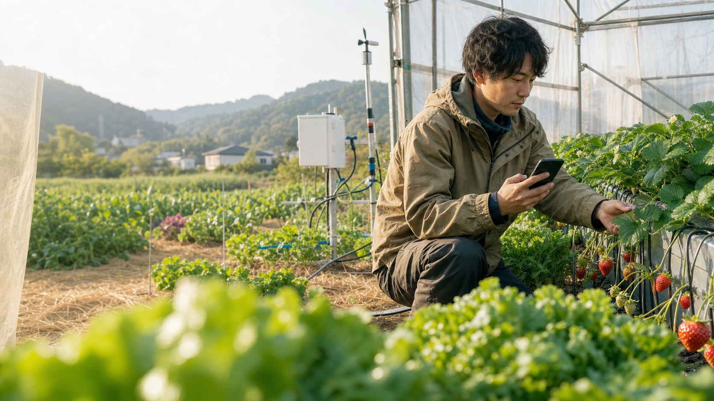
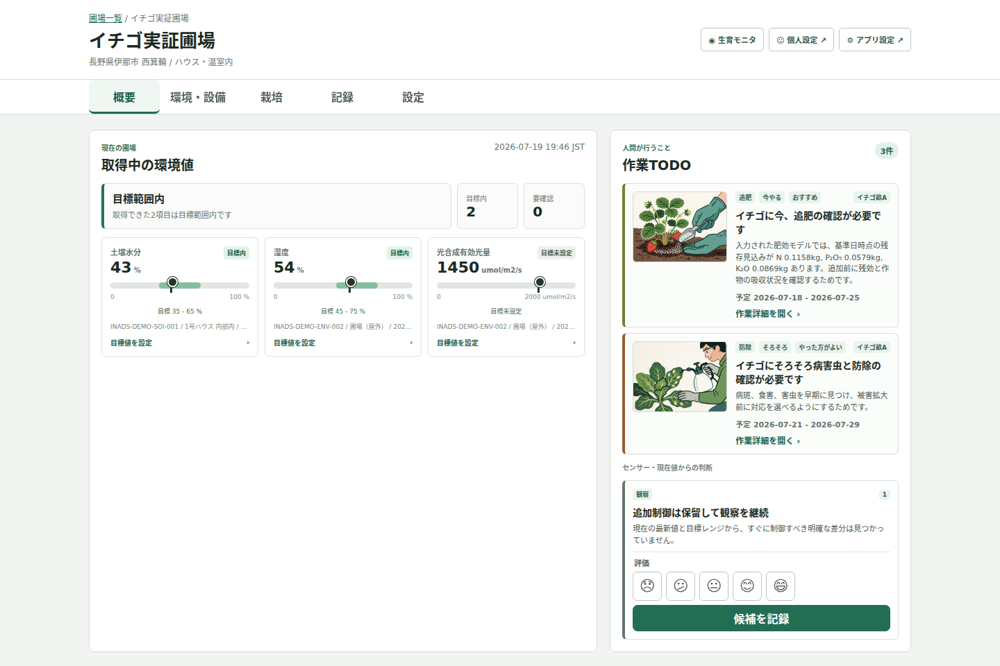
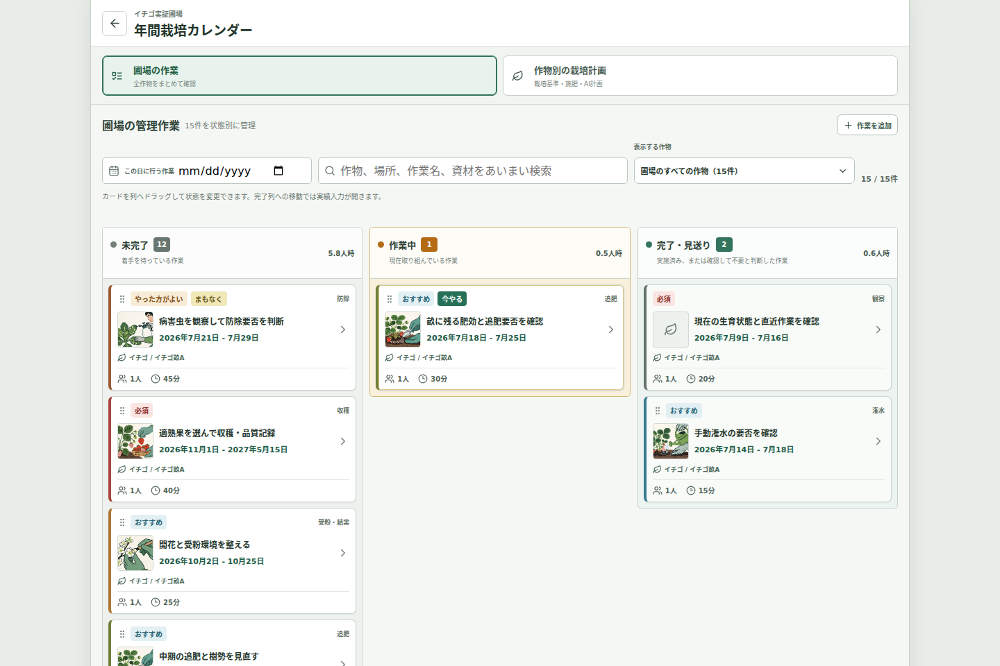
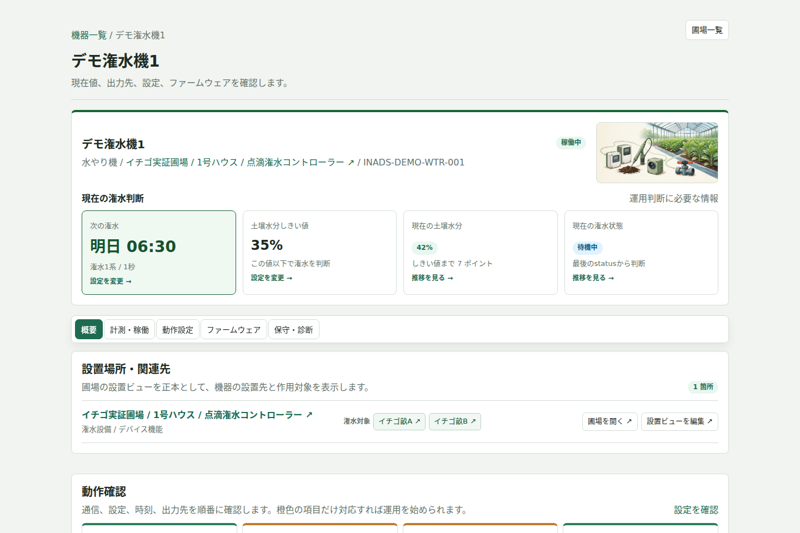

土の水分42%ちょうどよい
次の水やり明日
6:30自動スケジュール
6:30自動スケジュール
OPEN-SOURCE SMART CULTIVATION
センサー、カメラ、AI栽培計画、作業記録、潅水機器をひとつに。INAS Appは、栽培の「見る・考える・動かす」をやさしくつなぐ、オープンソースのスマート栽培基盤です。
家庭菜園から小規模農家・実証圃場まで。機器なしでも栽培計画と記録から始められます。

BEFORE INAS
数字を見るだけのIoTでは、栽培は楽になりません。INASは、観測した情報を次の判断と作業へつなげます。
土壌水分、温湿度、光、カメラを、作物と場所に結びつけて確認します。
AIが栽培資料と現場条件を整理し、期限超過・今やる・まもなくを見せます。
担当した作業を写真やメモとともに提出し、管理者が確認。承認済みの記録を次の計画へ反映します。
必要な機器だけ後から追加。公開された設計を使って自分で製作することもできます。
ONE CONTINUOUS FLOW
ばらばらだった栽培の情報と行動を、ひとつの流れにします。
作物、畝、鉢、センサー、カメラを、実際の配置に近い画面で確認。
AI栽培計画とWebの栽培基準が、作業の理由と判断条件を整理。
作業は担当・提出・管理者確認へ。潅水は次回起床で設定を受け取り、予定に沿って実行します。
ONE-MINUTE PRODUCT TOUR
見栄えのためのモックではなく、実際のHubをデモデータで操作した映像です。圃場の確認、作業の提出と承認、年間計画、省電力な潅水予約までを紹介します。
REAL PRODUCT SCREENS
実際のINAS Hub画面です。数値を並べるのではなく、利用者が次にしたいことへの動線を近くに置いています。

現在値と目標範囲、今日確認したい作業、作物と設備の配置を同じ画面に。異常がある場所から確認できます。

Webの栽培資料、定植日、現在の作業、施肥履歴、栽培条件を整理。提案を比較して採用し、作業ごとに担当者を決められます。

次の潅水時刻、現在の水分、どの設備からどの畝へ水を送るかを視覚化。省電力端末は次回起床時に設定を受け取り、予定時刻に潅水します。
CHOOSE YOUR FIELD
選択内容は先行案内フォームへ引き継がれます。
最初は栽培計画と写真記録だけ。必要になったら土壌センサーや自動潅水を足せます。
圃場全体の作業、センサー、施肥、潅水、写真をつなぎ、担当者の提出を管理者が確認して経験を翌年へ残します。
観測と作業の理由に加え、誰が実施し誰が確認したかを共有し、栽培の過程を振り返れます。
OPEN, REPAIRABLE, YOURS
スマート栽培を、一部の高価な設備だけのものにしない。必要な分だけ、小さく始められる選択肢を目指します。
セットアップ、H/W結線、設定、運用の公式ガイドと、公開されたソースコードから始められます。
製作が不安な方向けに、Hub導入済み機器や潅水デバイスの提供を準備しています。
提供準備中FREQUENTLY ASKED
利用画面は電子回路の知識がなくても分かることを優先しています。機器を自作しない方向けには、組み立て済み製品や導入支援を提供できるよう準備しています。
いいえ。栽培計画、作業カレンダー、写真付き記録から始め、必要になった場所へセンサーや潅水機器を追加する設計です。
現在は人が内容を確認することを基本にしています。作業は担当者が記録を提出し、管理者が確認できます。潅水は即時操作を前提にせず、省電力端末が次回起床で受け取るスケジュールに沿って動作します。
利用方法と必要な機器を含めて検討中です。まず需要調査で、困りごと、圃場規模、必要な機能を伺い、無理なく始められる構成を設計します。
ソフトウェアや機器の仕様を公開し、利用者が確認・修正・改良できる形です。利用条件は各リポジトリのライセンスを確認してください。
EARLY INTEREST SURVEY
現在、先行利用に関心のある方を探しています。販売の申込みではありません。使ってみたい場面や必要な機能を教えてください。